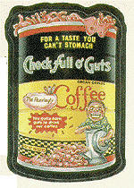

1
The '80s Server
http://www.80s.com
It's totally awesome! The new-and-improved '80s server offers a ton of fresh retro stuff for Web goers. Try your hand at the '80s version of Name That Tune, join an online competition to identify classic '80s movie quotes (help us with the one for Sept. 11: "I love you Pete, but I'm not enjoying it") or chill out with a RealAudio jukebox of rad '80s tunes. Finally, Nina Blackwood, phat laces and Yahoo Serious shall live on into future generations.
Mysterious Places
http://www.mysteriousplaces.com/index.html
From Easter Island to Mayan Ruins and Anasazi cliff dwellings, Mysterious Places takes a fascinating look at a series of national and international archaeological treasures. The site's excellent writing reads like an Edward Abbey book and is illustrated with captivating photos. Author and photographer Cliff Wassman is well-versed in both the history and geography of the regions that he covers, and skillfully conveys both the heart-stopping claustrophobia of descending to the bottom of a slot canyon and the important lesson that the decline of Easter Island can teach modern society. A grand adventure.
Angelnet
http://angelnet.com/
All this and brains too. Angelnet is a beautiful Web site that leads you to "The never-ending waters of love, beauty and harmony," and makes you drink of it. Movies, mantras, music and more, designed and displayed to soothe you and put you in touch with the "dolphyn" world--portrayed as one of peace and overwhelming spiritual bliss--will leave you feeling as warm as a Hot Toddy and as calm as a sea cucumber. Lots of art, New Age sound bytes, meditation links make this site a wonderful place to hang out, feel good and leave the "real" world behind. And besides, Angelnet is not just another pretty page. Aside from making you feel good, these celestial Webmasters promote environmental responsibility, including tips on how you can help keep Mother Earth beautiful and who to complain to on Capitol Hill should she be abused.
Wackypacks.com & John Mann's Wacky Packages
http://www.wackypacks.com/
http://www2.pair.com/wacky/
 Too wacky. This pick may be an act of sentimentality more than anything else, but some of us here at IU are pleased as punch that collections of Topps Wacky Packages stickers (collectible stickers lampooning products in the same style as the detestable Garbage Pail Kids cards) have been posted to the Web. Two sites will share this spot--Wackypacks.com is, graphically better organized, while John Mann's Wacky Packages Web Page is more informative, with trade show dates (huh?) and related links.
Golfcourse.com
http://www.golfcourse.com/
If whiskey and cigars are cool again, then why not golf? Before throwin' your clubs in the car and heading out to the links, you owe it to yourself to check out the vast searchable database of the nation's courses. For instance: looking for a nine-hole course for less than $50 within 25 miles of Duluth, Minn.? Golfcourse.com came up with two different courses that fit that description. On top of the locator, articles on featured golf courses, course architecture and environmental issues make for a site that is anything but par for the course.
Cool Tool of the Day
http://www.cooltool.com
Imagine a crew of "total software junkies" who need an intravenous feed of new wares to play with every day. Then imagine these die-hard gearheads editorializing on these fun toys every day. Your idea of heaven? Well, Cool Tool of the Day delivers all this and more. You'll find great Mac and PC applications, both on the Net and off, and all the information you need to run them. The site is polished and personable, with whimsical graphics and a joking, intelligent tone.
National Security Archive
http://www.seas.gwu.edu/nsarchive/
The truth is out there...in fact it's on the seventh floor of a library on the campus of George Washington University and now online. At the library and at the URL above you'll find the National Security Archive, a storehouse of once-classified information dealing with issues varying from the Cuban Missile Crisis to the historic meeting between Elvis and Nixon (see photo). Conspiracy theorists take note: If you want to dig up your own dirt, there are complete instructions on using the Freedom of Information Act as well.
Optical Illusions
http://lainet3.lainet.com/~ausbourn/index.htm
You come upon a great-looking site, but when you hit the links you realize there's no content there. While this may too qualify as an optical illusion, you won't find a depository of lame URLs here. These are the optical illusions that astounded you as a kid ("There's no way those two lines are the same length!"). And guess what, in this day of Shockwave and Java eye candy, these vexing visions are all still pretty cool.
nrv8
http://www.nrv8.com
"Enervate" means "to deprive of vitality." This zine, called nrv8, does just the opposite. By definition, it's busy "disputing definitions, contradicting arbitration, refuting norms, questioning authority, mocking ideals and contesting trends." In what way is TV detrimental to women? Is it really true that a good education will lead to a good job? And why do we worship celebrities anyway? nrv8's writers tackle the topics that will really make you sweat, shout and stay up all night composing a rebuttal.
Oyez Oyez Oyez
http://oyez.at.nwu.edu/oyez.html
The pounding of a gavel and the magic words "Oyez, Oyez, Oyez" mark the beginning of all Supreme Court proceedings and also welcome you to this supreme site. Northwestern University political science professor Jerry Goldman has created a guide that clearly explains key legal issues and details surrounding important Supreme Court cases. At the heart of Oyez are RealAudio recordings of oral arguments and opinions. The site's extensive archives provide a unique glimpse at the workings of the highest court and allow you to listen in as attorneys present such landmark cases as Roe v. Wade and United States v. Nixon before the justices. This continuously updated site will soon feature hundreds of cases and hundreds of hours of audio. It would be a crime not to visit.